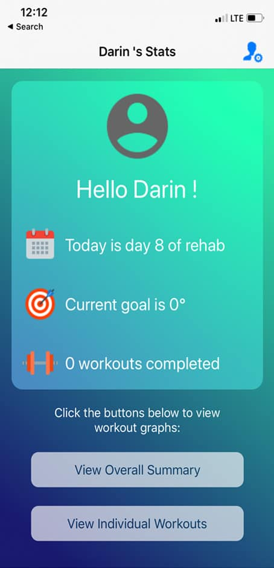
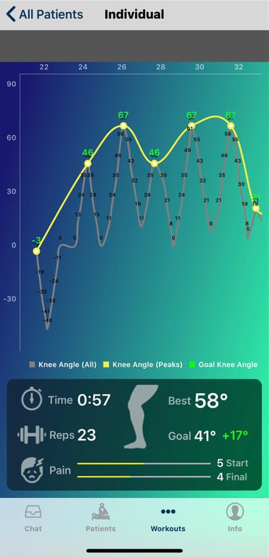
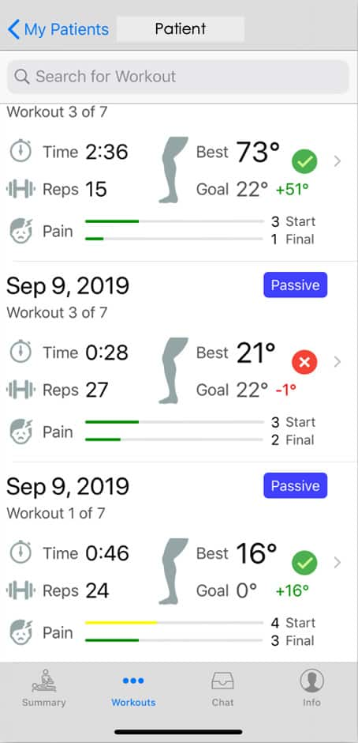

Effectively, safely and conveniently connect patients with their medical professionals — with real-time data that improves outcomes, raises satisfaction and lowers cost.
Never before has there been a more important time to connect patients with their medical professionals. The Patient Monitoring App enables telemonitoring and collects real-time patient data used by a Virtual Medical Professional to recommend the next course of treatment — all while improving outcomes, raising patient satisfaction and lowering costs.
It takes the patient investing many hours, over many days, to rehab their way back to a positive outcome. That process becomes much easier as the patient is encouraged by tracking the progress they are making.
Weeks of rehabbing can be emotional and exhausting. Patients realize that without following their surgeon’s protocol, outcomes will be compromised. Seeing is believing — the data points collected bring to life how much the patient is improving: goals achieved, time spent rehabbing, range of motion, reps and pain level.
Knowledge is power. Data captured over the course of rehab lets everyone involved assess outcomes. The data collected is de-identified and quantifiably answers what previously were only theories about effective rehabilitation.
What Patients See

Keeps patients progressing toward a positive outcome.

A daily overview captures trends and progress.

Meaningful data benefiting patient and clinicians.